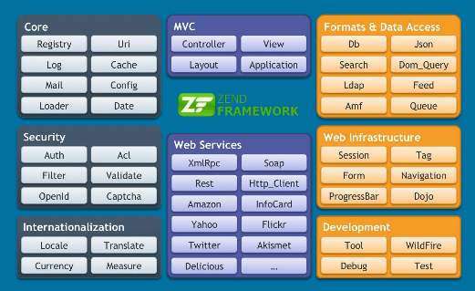
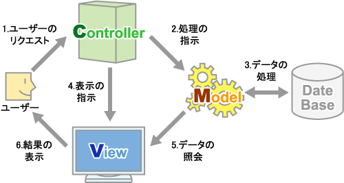

フレームワーク
単語の意味自体は、「枠組み、骨組み」を意味していますが、 システム開発におけるフレームワークとは、「アプリケーションを開発する上で、土台となる部分を提供するもの」といった意味になります。 具体的には、開発手順や開発規約が定められていたり、様々な機能を手軽に実装するためのライブラリ群などによって構成されています。 例えば、Webアプリケーションフレームワークであれば、認証／セッション管理や、データベース管理、テンプレートなどが提供されます。 いわば、「開発支援ツール」のようなものです。
フレームワークを導入するメリットとデメリットを下記にまとめました。
| メリット | 内容 |
|---|---|
| 品質の均一化 | 開発に関わる全員が同じ開発手順、同じ開発ルールに従って開発を行うため、完成物の品質を一定に保つことができます。 |
| 開発効率の向上 | 開発において最も労力が必要となる、土台部分の設計や実装が既に行われており、 それらが実際にテスト済みである点や、予め用意されたモジュールを活用することで、開発工程を縮小することができます。 |
| メンテナンス性の向上 | 誰が担当した部分であっても、開発ルールが徹底されているため中身は一目瞭然であり、 修正や変更を行う場合も同じルールが適用できます。従って、メンテナンスにかかる労力や時間も最小限に抑えることができます。 |
| デメリット | 内容 |
| マスターするのに時間がかかる | フレームワークには、開発手順やプログラムの書き方など細かな決まりがたくさんあり、 それら全てを理解することが必要不可欠です。一度マスターしてしまえば簡単ですが、最初は時間と労力を要します。 |
| ライセンス問題 | フレームワークの多くはオープンソースで提供されていますが、 中には特定の人物がライセンスをもつモジュールが含まれていたり、突然ライセンスを主張して一部が有料化されることがあります。 いつ何がそのようになるか予測不可能なのが難点です。 |
| フレームワーク自体のメンテナンス | フレームワーク自体にセキュリティホールやバグが見つかった場合、通常はフレームワークの開発に携わる技術者たちによって改修が行われる。 しかし、無料である以上改修の義務はありません。 フレームワークの開発プロジェクトが突然解散になることもあります。それ以降全て自力でメンテナンスしなければならなくなります。 |
Zend Framework
使用している Zend Framework の特徴について、以下にまとめました。
Zend Framework で提供されるコンポーネント
Zend Framework は非常にシンプルな構造をしていて、すべて PHP5 のオブジェクト指向を用いて設計されています。
一つ一つのクラスライブラリは「コンポーネント」と呼ばれ、それぞれを単独で呼び出すことができます。
Zend Framework は MVC モデルに基づいて設計されていますが、その MVC もコンポーネント群として提供されていますので、
Zend Framework のコンポーネントは用いるが MVC は使わないといったこともありえます。
以下、Zend Framework で提供されるコンポーネントについて表でまとめます。
Zend Framework には、この他にも多数の機能が容易されています。
ここで表示しているのは、ほんの一部でしかありません。
| コンポーネント | 概要 |
|---|---|
| Zend_Acl | 軽量で柔軟なアクセス制御リスト(ACL)機能と権限管理機能 |
| Zend_Auth | 認証のためのAPI |
| Zend_Config | アプリケーションの設定データを使用するためのコンポーネント |
| Zend_Controller | MVCシステムの中心で「コントローラ」の部分 |
| Zend_Db | SQLデータベースアクセス関連コンポーネント |
| Zend_Debug | デバッグ関連コンポーネント |
| Zend_Exception | 例外クラス関連コンポーネント |
| Zend_Log | ログ出力用の汎用コンポーネント |
| Zend_Paginator | レコードをページ分けして表示するためのコンポーネント |
| Zend_Pdf | PDF操作エンジン |
| Zend_Registry | アプリケーション用のレジストリ関連コンポーネント |
| Zend_Session | セッションデータ管理関連コンポーネント |
| Zend_Validate | 一般的に必要となるバリデータを提供 |
| Zend_View | MVCパターンにおける 「ビュー」として働くクラス |
Note: More Information

Note: More Information
アプリケーションをM（モデル）、V（ビュー）、C（コントローラ）、の組み合わせで開発するモデルを MVC と言います。

Model - ビジネスロジックを指し、「データを管理する手段」を担当する部分で、 具体的には、「データ保存や読込を行う関数やクラス」のことです。（プログラマーが担当）
View - 画面表示を担当する部分です。画面表示に関する処理は全てビューが担当します。（デザイナーが担当）
Controller - モデルとビューとが連携する橋渡しです。 すなわち、ユーザからのリクエストを受けて行うべき処理を判断し、 必要なデータ処理をモデルに依頼し、モデルからの処理結果を受け取って、ビューに画面表示を依頼します。 システムの処理の大部分は、コントローラが担当することになります。
注意： Zend Framework で動作可能なＰＨＰの最低バージョンは、「５．１．４」です。
また、Zend Framework のソースコードは、全てスクラッチから書かれており、 Zend Technologies 社以外の著作権者は存在しません。 よくあるライセンス上のトラブルも、安心できます。
非常に高機能で信頼性の高い多種多様なライブラリが、Zend Framework だけで手に入るのも大きな魅力の一つです。
日本語のマニュアルページ
他のフレームワーク（ CakePHP、symfony ）と比較しても、 独自フレームワークとして全体が統一された構造（「がちっ！」とした構造）になっておらず、 「様々な機能を組み合わせられたライブラリ的な構造」になっている。
幅広い機能を提供しながら習得が比較的楽であり、動作も高速です。
Zend Framework はこれまで開発してきた既存のPHPコードも活用しやすいですし、他のライブラリ（ Ajax、テンプレートエンジン）との併用も可能です。